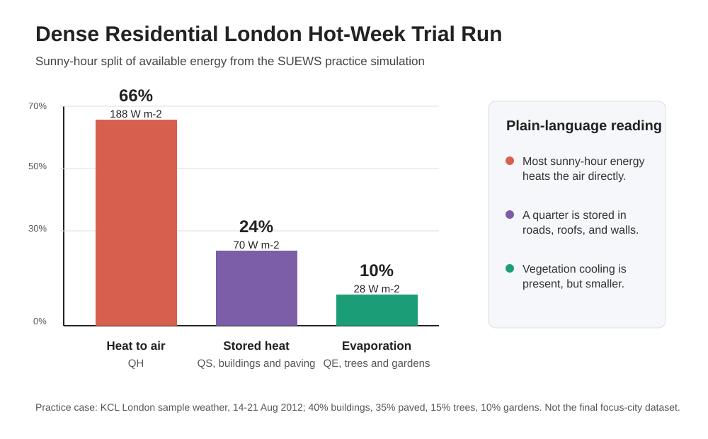

Urban form
40% buildings at 12 m average height, plus 35% paved streets, pavements, and car parks.
Which neighbourhoods in the focus city become most heat-risk exposed under a +3 C hotter-future stress test, and where do social vulnerabilities make that heat most dangerous?
This page rehearses the workflow for the SUEWS Community Hackathon: configure a neighbourhood, run SUEWS for a hot period, interpret the energy balance, and state exactly where the hazard-to-risk bridge is still incomplete.
The real focus-city data arrives on the hackathon day. This trial uses a simplified London neighbourhood so I can practise the full modelling and storytelling workflow before the judged event.
40% buildings at 12 m average height, plus 35% paved streets, pavements, and car parks.
The remaining 25% is split into 15% street trees and 10% small gardens or grass.
The simulation uses the bundled KCL London 2012 sample forcing, clipped to its hottest seven-day period.
The repository keeps the configuration, provenance, diagnostics, output, figure, and this page together, so the trial run can be checked rather than taken on trust.
Started from the simple urban SUEWS template.
Changed land cover, building height, and roughness assumptions.
Clipped the sample weather to 14-21 August 2012.
Checked the setup: zero validation errors and 168 hourly records.
Confirmed output exists and main heat-flow variables are complete.
Translated QH, QS, and QE into a plain-language heat story.
During sunny hours, the model estimated roughly 285 W m-2 of available energy from net radiation plus human-made heat. Most of it heated the air or charged the urban fabric.
With 75% built or paved surface, vegetation cooling is present but not dominant. This is the core trial finding to carry into the hotter-future risk framing.
| Quantity | Trial result | Interpretation |
|---|---|---|
| Surface temperature peak | 37.7 C | Hard surfaces warm strongly during the hottest periods. |
| Near-surface air temperature peak | 30.7 C | Air heating is substantial but lower than surface heating. |
| Night-time storage heat | Negative QS | Built and paved surfaces release stored heat after sunset. |
| Main data check | 0% missing QH/QE/QN | The plotted heat-flow outputs are complete. |

Figure: SUEWS trial result for the dense residential London practice case. The final hackathon version should use the focus-city neighbourhoods and the provided hotter-future forcing.
The real question is not just which neighbourhood is hottest. The important policy question is where heat exposure and social vulnerability overlap.
SUEWS can estimate physical heat metrics such as high temperature hours, night-time heat retention, and changes under hotter forcing.
The social-risk layer must come from the framework and indicators supplied on the day, not invented from the sample London run.
The strongest final answer will rank places where high heat and high vulnerability coincide, then say where that bridge is uncertain.
Honest limitation: this trial does not include the focus-city dataset, the +3 C forcing, or the vulnerability indicator. It is a workflow rehearsal and a forum-ready request for feedback.
I mapped the trial page to the hackathon criteria so the final version can be built deliberately rather than rushed.
Reproducible SUEWS run, changed land cover, stated assumptions, validation checks, output figure, and citation.
Final version needs focus-city data, all relevant neighbourhoods, and expert review of warnings.
Separates physical heat hazard from social vulnerability instead of blending them too early.
Final version needs the provided risk indicator and a clear explanation of where it holds or breaks.
This page is structured as a transparent forum post with caveats and questions for feedback.
Final version should reflect community feedback and cite what changed because of it.
The page has one question, short method, headline result, figure, caveats, and next step.
Final version needs a ranked focus-city result visible early on the page.
The assistant helped configure, run, diagnose, visualise, and translate SUEWS results.
Final version should export the transcript and preserve prompts, checks, failures, corrections, and decisions.
For the judged version, I should treat the assistant as a modelling partner that must show its working, not just a page-writing tool.
Before running anything: list what is known, what is assumed, and which assumptions are risky enough to ask a table lead about.
Run baseline and hotter-future cases together, then ask for the difference, not just the raw outputs.
Ask for validation, missing-data checks, energy-balance checks, and a plain-language explanation of every warning.
This trial uses SUEWS/SuPy 2026.6.5. The final submission should cite the current software release and the core SUEWS papers.
| Jarvi et al. (2011) | The Surface Urban Energy and Water Balance Scheme (SUEWS): Evaluation in Los Angeles and Vancouver. Journal of Hydrology, 411(3-4), 219-237. |
| Ward et al. (2016) | Surface Urban Energy and Water Balance Scheme (SUEWS): Development and evaluation at two UK sites. Urban Climate, 18, 1-32. |